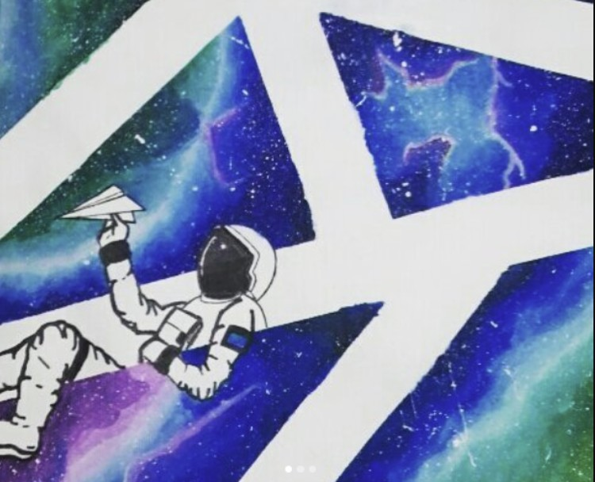
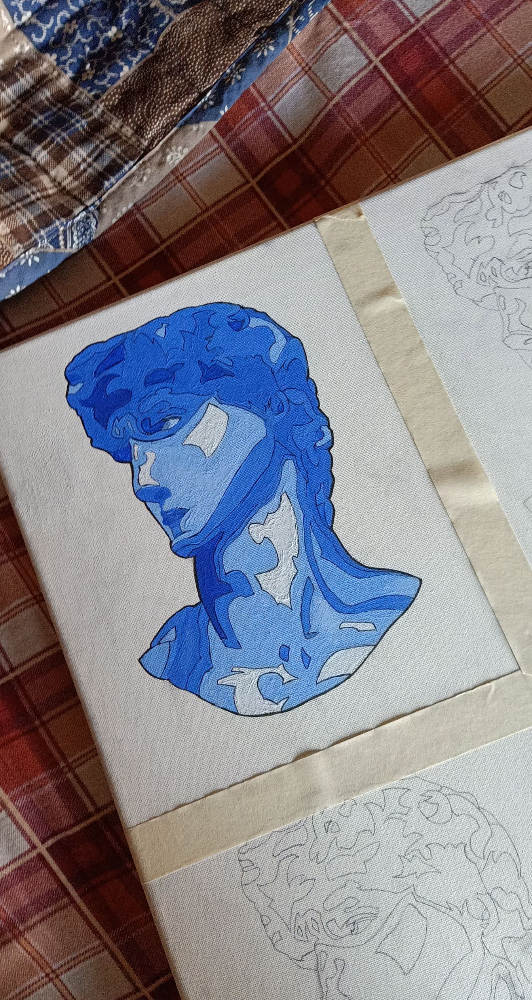
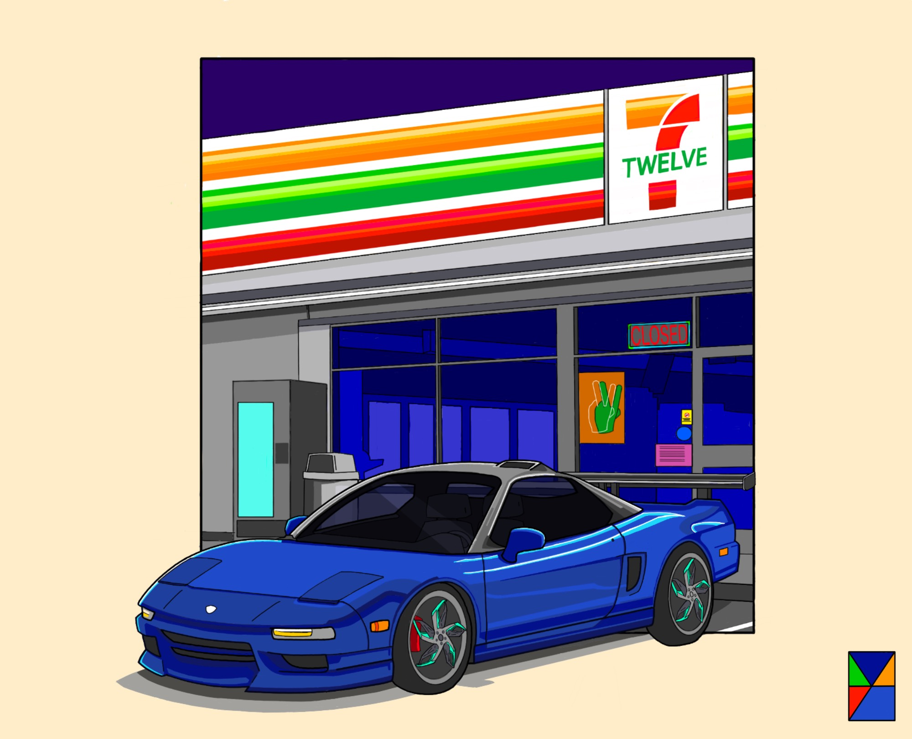
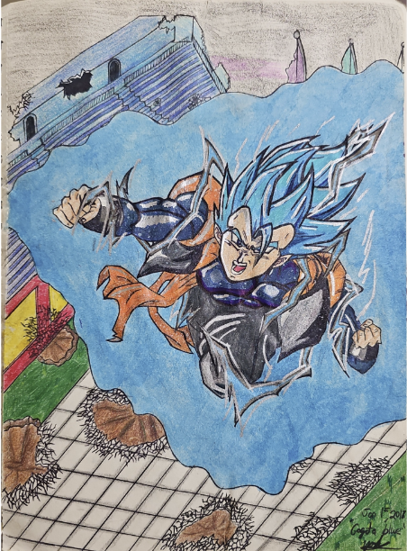
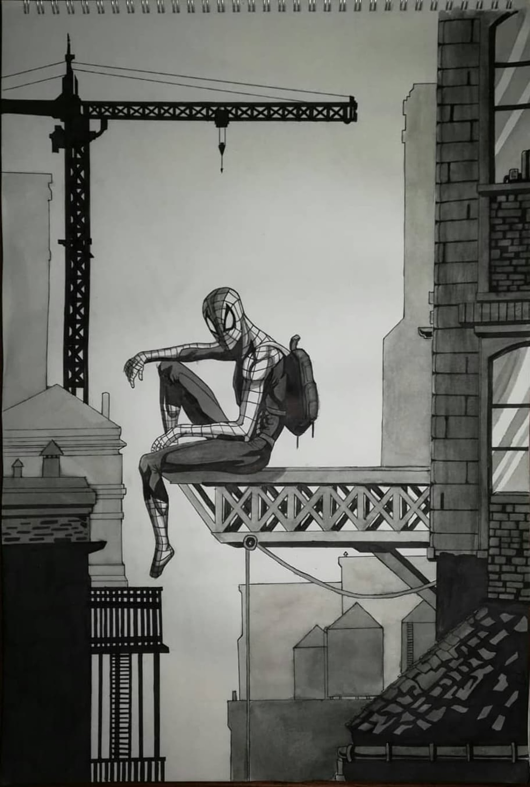
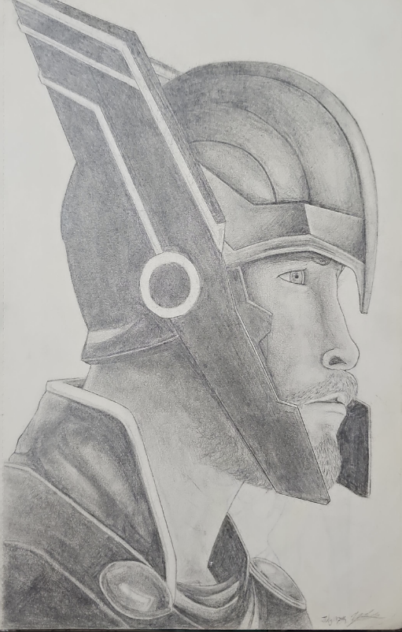
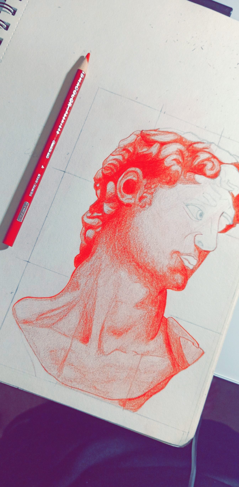
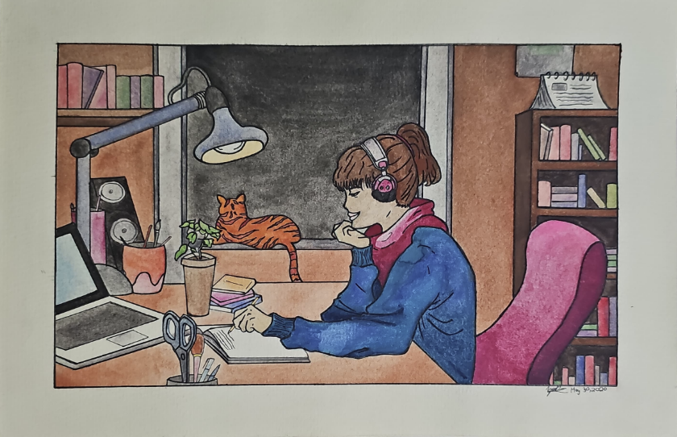

As a self-taught artist, I take pride in working with a range of mediums, including acrylics, watercolors, markers, fineliners, ballpoint pens, and pencils. Below you'll find my work organized by category.